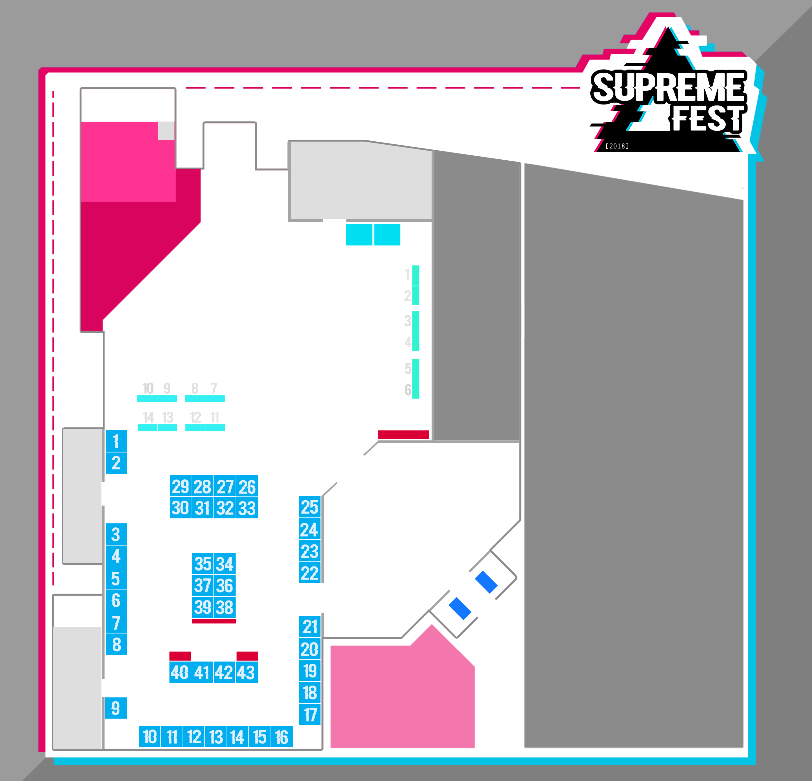

<div class="app" data-role="page" id="map">
    <div class="container full-min-height">
        <div class="ui-content overflow-hidden">
            <div id="map-container">
                <!--<h3 class="text-center title">Mapa</h3>-->
                <div class="text-center" id="floor-map">
                    
                    <button class="map-btn" id="location-1" onclick="map.getLocationInfo(this,1)"><i class="fas fa-map-marker"><i class="fas fa-door-open"></i></i></button>
                    <button class="map-btn" id="location-2" onclick="map.getLocationInfo(this,2)"><i class="fas fa-map-marker"><i class="fas fa-couch"></i></i></button>
                    <button class="map-btn" id="location-3" onclick="map.getLocationInfo(this,3)"><i class="fas fa-map-marker"><i class="fas fa-shopping-bag"></i></i></button>
                    <button class="map-btn" id="location-4" onclick="map.getLocationInfo(this,4)"><i class="fas fa-map-marker"><i class="fas fa-pencil-alt"></i></i></button>
                    <button class="map-btn" id="location-5" onclick="map.getLocationInfo(this,5)"><i class="fas fa-map-marker"><i class="fas fa-camera"></i></i></button>
                    <button class="map-btn" id="location-6" onclick="map.getLocationInfo(this,6)"><i class="fas fa-map-marker"><i class="fas fa-stroopwafel"></i></i></button>
                    <button class="map-btn" id="location-7" onclick="map.getLocationInfo(this,7)"><i class="fas fa-map-marker"><i class="fas fa-users"></i></i></button>
                    <button class="map-btn" id="location-8" onclick="map.getLocationInfo(this,8)"><i class="fas fa-map-marker"><i class="fas fa-eye"></i></i></button>
                    <button class="map-btn" id="location-9" onclick="map.getLocationInfo(this,9)"><i class="fas fa-map-marker"><i class="fas fa-tshirt"></i></i></button>
                    <button class="map-btn" id="location-10" onclick="map.getLocationInfo(this,10)"><i class="fas fa-map-marker"><i class="fas fa-poo"></i></i></button>
                    <button class="map-btn" id="location-11" onclick="map.getLocationInfo(this,11)"><i class="fas fa-map-marker"><i class="fas fa-utensils"></i></i></button>
                    <button class="map-btn" id="location-12" onclick="map.getLocationInfo(this,12)"><i class="fas fa-map-marker"><i class="fas fa-car"></i></i></button>
                </div>
            </div>
            <div class="internal-spacing bottom-details" id="location-desc">
                <button class="close" onclick="map.closeDetails()"><i class="fas fa-times"></i></button>
                <h4 class="title"></h4>
                <div class="desc"></div>
            </div>
        </div>
    </div>
</div>
